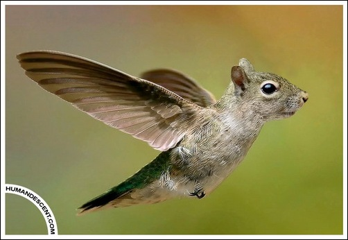

How to FAIL Web Accessibility
Ошибки, заблуждения, мелочи, и просто
глупые аспекты современной веб-доступности
Станислав Зубович, EPAM
How to FAIL Web Accessibility
Полностью "доступный" сайт не существует

C разными направлениями развития
Веб доступность
не только для слепых пользавателей
Доступные сайты не должны быть безобразными
Хоть зачастую и получаются такими
Есть проблема брендинга:
- A11Y
- WCAG
- ARIA
- DAISY
- PFGW
- UAAG
- и т.д.
Найдите экспертизу
Или воспитайте своего эксперта
Соблюдение требований
vs
Обеспечение доступности
Сайт может быть
полностью правильным
но совершено недоступным
Cайт может быть
полностью правильным
и технически доступным,
но быть недоступным для пользователей
Слишком много доступности?
Веб доступность должна быть естественой
Если сделать частично или неправильно
то может стать только хуже
Не создавайте пользователям проблем
Не забывайте, что пользовательский опыт может отличаться
Делайте одну версию сайта, которая будет полностью доступной
Но предоставьте альтернативу, если вы не можете сделать ваш сайт доступным
Или помогите пользователю
Alt - это контент или функционал
И лишь изредка описание
alt="плейбой миллионер филантроп..."
FAIL
alt="Изображение известного актера"
FAIL
alt="Фотография моего кота"
FAIL

alt="Фотография Национальной библиотеки"
WIN
Я не хочу пропустить ни капли контента
vs.
Я слушаю ваш сайт со скоростью 400 слов в минуту голосом Сири и мне плевать на настроение вашей старницы, сфокусируйтесь уже на контенте и функионале
Картинки-ссылки ОБЯЗАНЫ иметь alt
Избегайте бесполезных текстов
<img src="tgif.png" alt="tgif">
FAIL
Капча
Абсолютно легальный способ запутать пользователя
Accesskey и Tabindex
FAIL
Используйте, только если бы на 100% уверены,
что делаете все правильно
Сила нулевого и отрицательного tabindex вам в помощь!
- tabindex="1+"
Однозначно и железно задает tab order переходов по странице.
- tabindex="0"
Задает дефолтный tab order при переходах по странице.
- tabindex="-1"
Не задает элементу tab order, но позволяет фокусировться программно.
Tabindex, focus() и ARIA
это выход!
WAI-ARIA предоставляет нам
- Роли для описания типа активных элементов
- Роли для описания структуры страниц
- Атрибуты для описания состояний
- Атрибуты для задания активных областей страницы, допускающих обновления
- Атрибуты для перетаскивания объектов
- И это только верхушка айсберга
Визаульно спрятанный контент.
- display: none и visibility: hidden спрячет контент от каждого
- И это хорошо!
- Абсолютное позоционирование текста за пределы экрана одобряют скрин ридеры.
- Но используйте силу CSS с умом
Нативная доступность и юзабилити вашего сайта как правило обрано пропорциональна объему пояснительного текста.
Люди с ограниценными возможностями как правило достаточно лояльны, но все же
Обычный пользователь видит:
Придумайте пароль!

Пользователь с ограниценными возможностями слышит:
Придумайте свой пароль! Пароль, в первую очередь, предназначен для того, чтобы доступ к определенной информации имели только те люди, которые его знают. Поэтому не используйте простые пароли вроде таких, как password, admin, user, music, enter и тому подобное. На то, чтобы их взломать, любой приличный брутфорсник (программа для подбора паролей) тратит минимум времени. Выбирая пароль, Вы должны принять во внимание то, что его могут попытаться украсть лица, которые Вас знают, а значит, они вполне могут составить небольшой словарь со словами, которые Вы можете использовать в качестве пароля.
"Skip to main content"
Шо опять?
"Skip to main content"
a#skip {
position: absolute;
top: -20px;
}
.a#skip:focus {
top: 0px;
}
А давайте уберем некрасивый outline!
a:focus, a:hover {
outline: none;
}
FAIL
Можно только улучшать!
a:focus, a:hover {
outline: 1px;
background: #ffe;
text-decoration: underline;
}
WIN
Пользователи скрин-ридеров
не выключают js
ну может быть процентов 10
Избегайте Click here
это достаточно неоднозначно и вообще плоский ход
Headings
структурированные, не пустые, один h1 на странице
И напоследок:
- Определитесь с экспертизой
- Тустируйте в скрин ридерах
- Не забывайте про контент
- Не изобретайте веловипеды
- Не перенаплягайте пользователя ридеров
- Таблицы не вредят доступности (почти)
Создавайте ваши сайты простыми, понятными и доступными
Let's make web a better place
Powered by Shower